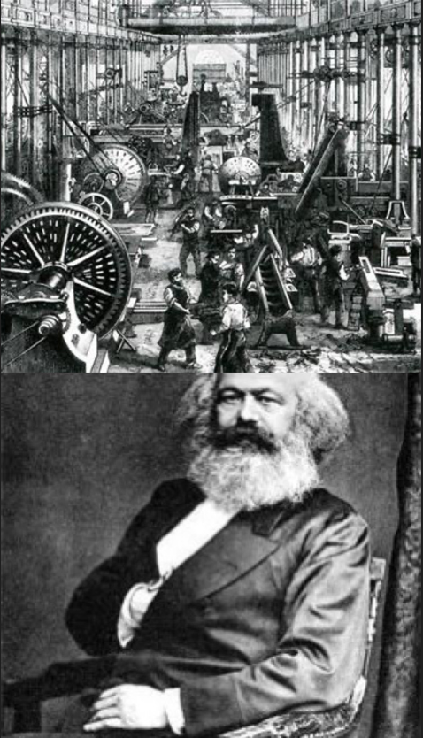

Simulação da Fabrica de Vasos 🏺
Não foi exatamente uma atividade, mas foi muito essencial para o trabalho proposto na época, onde a professora e os alunos simulamos que estavamos numa fabrica de vasos, onde nos eramos os camponeses e ele era o clero ou a dona da fabrica, onde nessa atividade vimos um pouco mais como funcinavam as fábricas e partir disso entrando as críticas de Karl Marx.